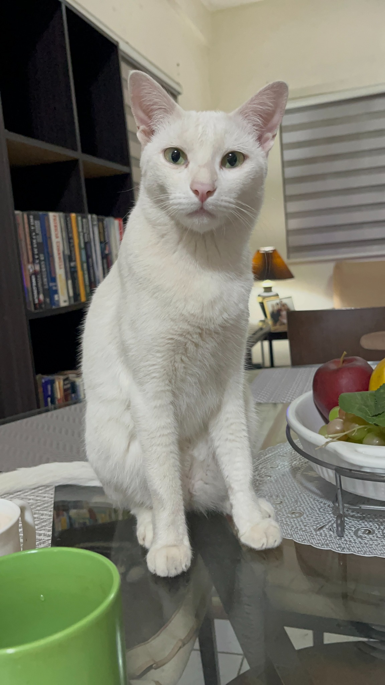

A safe space
A foster home gives kittens somewhere protected to rest, grow, and feel comfortable.
A little website with a big heart
Helping kittens find loving forever homes.
Welcome to Shiro's world
Welcome to Shiro the Cat! This website is about my cat, Shiro, and the many kittens still waiting for a safe and loving home. I created it to share Shiro's story and help more people learn about fostering and adoption.

Meet the inspiration
Shiro is my family's cat and the reason I wanted to make this website. On the Shiro page, I'll share how my family adopted her, what she's like, and some of my favorite photos of her.
Her story is a reminder of how much a cat can become part of a family.
Read Shiro's storyWhy this matters
Many kittens, including stray kittens in the Philippines, need food, shelter, and care. Fostering can give them a safe temporary home while they get ready for adoption. Even if you cannot foster right now, learning about local rescue groups is a good first step.
A foster home gives kittens somewhere protected to rest, grow, and feel comfortable.
Adoption, fostering, volunteering, and sharing reliable resources can all make a difference.
Caring for a cat takes patience and responsibility, but the bond can be very rewarding.
For more information, visit Kitten Lady's fostering guide.